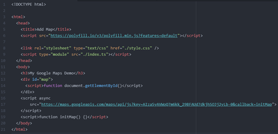
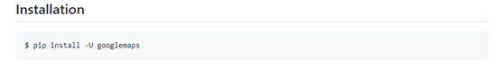
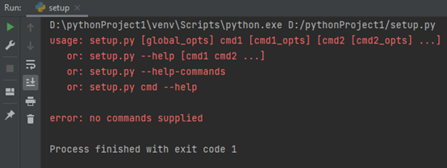
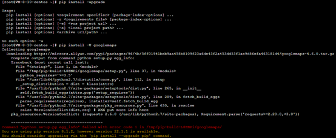
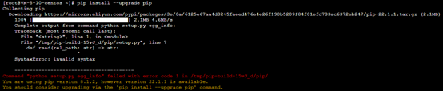
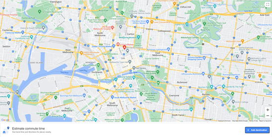
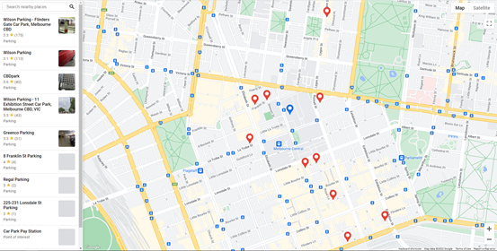
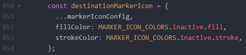
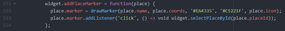

Parker Website Version
Introduction
To make our project come true instead of just an idea, we need to build a web version of Parker by ourselves. Parker is consisting of 2 parts. The first part is the navigation system, which is also the basic function of a map app. The second part is the function that shows the parking lots nearby, with the information about it. I decided to finish these 2 parts separately.
Navigation System
To implement the navigation system, we decided to access supports from Google Maps Platform.
This website provides a lot of information and docs to help developers in developing a map. There are 3 main parts:
- Maps
Maps brings the real world to our users with dynamic maps for the web and mobile with the help of APIs based on JavaScript. If needed, a 360-degree street view is available.
- Routes
Routes provides directions for multiple transportation modes, featuring real-time traffic information. This makes sure that the navigation works properly rather than leading the driver crushing into a building.
- Places
Places contains searching places and locating functions. This will convert coordinates into addresses and addresses into coordinates under the help of geocoding. Different time zones will be determined via a set of coordinates.
After getting to know with how the web map works, the next step is to program by myself. However, the problem is that I have not learned JavaScript before, so I have no idea about how to use the API into the web map. Fortunately, there are a lot of tutorials in the Google Maps Platform that explains each step in detail.
First try
First, I need to create a html page. This is the place where our map will show up.
In the code above, the "script" loads the API from the URL, the “callback” parameter executes the “initMap” function after the API loads. The async attribute allows the browser to continue to parse the remainder of your page while the API loads. Once it has loaded, the browser will pause and immediately execute the script. The key parameter contains my API key. The initMap function initializes and adds the map when the web page loads. I also use a "script" tag to include my own JavaScript which contains the initMap function.
However, when I open the website, there is no map at all. The only probable reason that caused this is problem is that the API URL in invalid. The problem is, I do not have any knowledge about programming in JavaScript. I tried all the methods in the Google Maps Platform, but the map still will not show up.
I suddenly noticed that there is a GitHub page at the bottom of the website. Inside, it illustrates the way to bring the Google Maps Platform Web Services to a Python application.
Second try
I cloned the repo from GitHub immediately and decided to try to run the Python program in the beginning. Unfortunately, none of the programs worked.
So, I started to read the README file in the repo and followed the instructions on in. According to the file, this method requires some knowledge of Linux. Coincidentally, I have rented a Linux system cloud server to build a Minecraft server a few months ago, and the cloud server is not expired yet, so I understand the codes below.
However, the installation of google maps did not go well, an error occurred. Though I followed the instructions showed below, the same error occurred again.
 This method will not work.
Third try
At the time I was going to give up, I saw a function in Google Cloud Platform where I tried to access the APIs. The “Solution library” function allows me to build a map with a set of built-in code. Here is the output of the website.
Now the navigation system is done, it is time to start the parking lots searching function.
Parking lots searching
This function is similar to google map’s “nearby” function, it is just the function that shows nearby parking lots is done automatically on Parker. With previous experience, I managed to develop the function to find nearby parking lots quickly.
So how can we make the function done automatically? Theoretically, if I can find the code that achieve the “nearby” function and add it under
Now the goal is to make each parking lots show their detailed information near the red sign. To add information near the red sign, all I need to do is to find the lines of code that demonstrate the red sign and add some columns above it to show the information. After reading the codes for years, I have finally found a function like this.
I deleted the whole code to test if this is the one I’m looking for, the marker still shows up in the map. This is not the one.
After searched for a while, I managed to find the correct one.
According to the code above, I need to find the function “place” to edit the marker. However, I can’t find the function nowhere. So, I decided to program sprightly behind the “place.marker”. At first, I wanted to add some bars above the marker to show the information about the parking lot like current empty parking spaces, parking price and the parking lot’s closing time, but I have no clue about how to add such bars above the marker. So, I was thinking maybe I can edit the icon, like add some bars above the pin. However, I immediately realised that I can’t add any data inside a picture. So I gave up doing it.
If we have more time, I’m sure we can figure out how to combine these 2 functions.